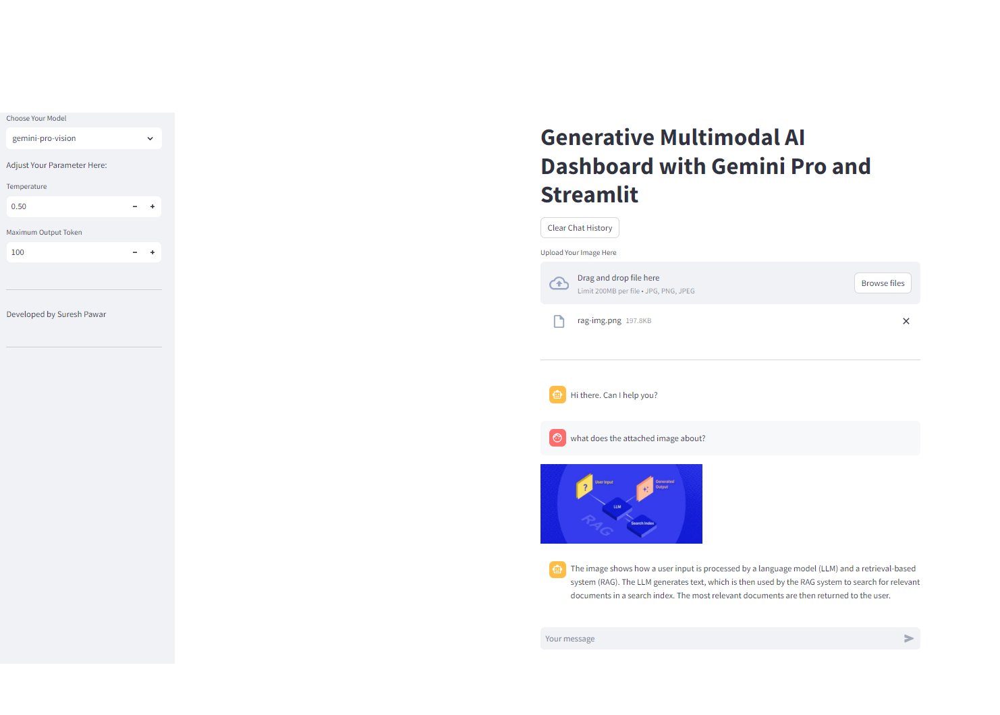

The Gemini Multimodal AI Dashboard is a cutting-edge web application developed with Streamlit, designed to harness the power of Google's generative AI technologies for both textual and visual data processing. This multifaceted tool enables users to interact with advanced AI models through a multimodal approach, accommodating inputs in the form of text and images. The dashboard facilitates seamless switching between gemini-pro for text-based inquiries and gemini-pro-vision for image-related analyses, making it an indispensable tool for applications requiring a blend of textual and visual AI capabilities.
A brand strategy firm aims to leverage AI for developing comprehensive strategies that encompass both textual content and visual imagery, ensuring a consistent and impactful brand presence across various media.
https://github.com/sureshdpawar/multimodal-gemini-genai-app
Note: You will need an Google API key to access the chatbot, which you can obtain from Google API Keys.
